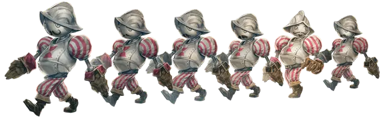

Оловянный солдатик
Tin Soldier
Маленький Конструкт, без мировоззрения

Класс Доспеха 18 (природный доспех)
Хиты 27 (6к6 + 6)
Скорость 25 футов
| мод | спас | ||
|---|---|---|---|
| СИЛ | 14 | +2 | +2 |
| ЛОВ | 11 | +0 | +0 |
| ТЕЛ | 13 | +1 | +1 |
| мод | спас | ||
|---|---|---|---|
| ИНТ | 1 | −5 | −5 |
| МДР | 3 | −4 | −4 |
| ХАР | 1 | −5 | −5 |
Иммунитет к урону психическая энергия, яд
Иммунитет к состояниям паралич, очарование, отравление, ослепление, окаменение, истощение, испуг, глухота
Чувства слепое зрение 60 футов (слеп за пределами этого радиуса), пассивное Восприятие 6
Опасность 1 (200 опыта)
Бонус мастерства +2
Особенности
Восприимчивость к антимагии. Оловянный солдатик недееспособен, пока находится в пределах области преграды магии [antimagic field]. Став целью рассеивания магии [dispel magic], солдатик должен преуспеть в спасброске Телосложения Сл спасброска заклинателя, иначе потеряет сознание на 1 минуту.
Обманчивая внешность. Пока солдатик остается без движения, он неотличим от обычного комплекта доспехов.
Действия
Мультиатака. Оловянный солдатик совершает две рукопашные атаки.
Размашистый удар. Рукопашная атака оружием: +4 к попаданию, досягаемость 5 футов, одна цель. Попадание: 5 (1к6 + 2) дробящего урона.
Описание
Эти автоматоны сделаны так, чтобы выглядеть как крепкие пехотинцы, и они беспрекословно подчиняются Скабатхе. Они бросаются вперед, чтобы расследовать любую подозрительную активность, которую они видят или слышат, а это означает, что их легко отвлечь.